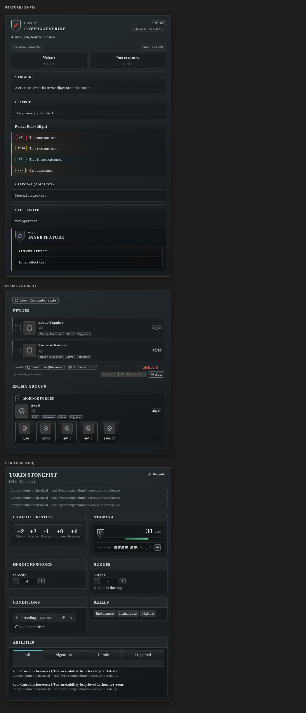
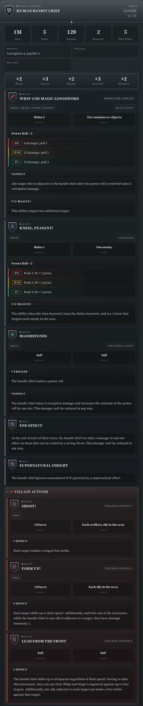
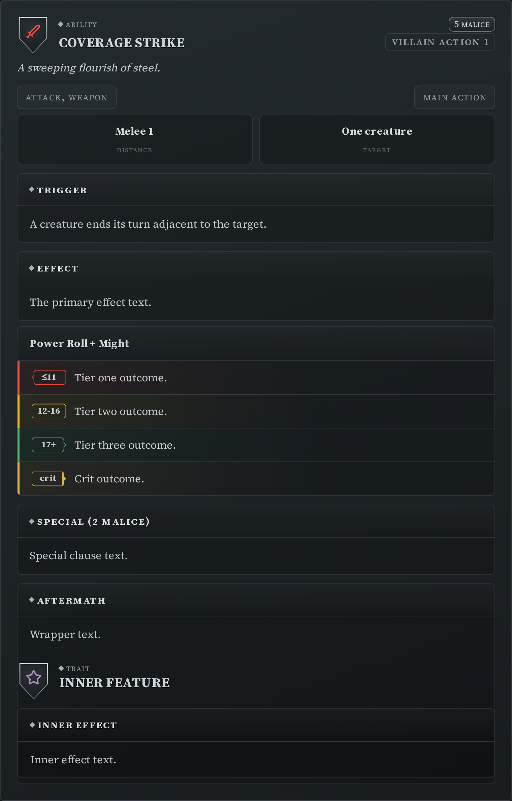
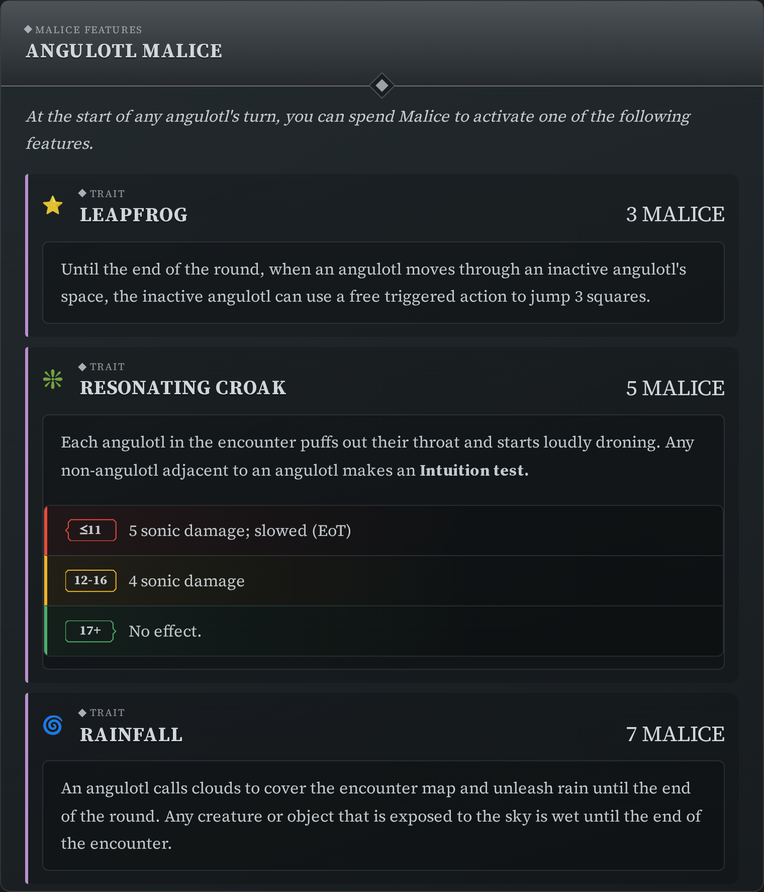
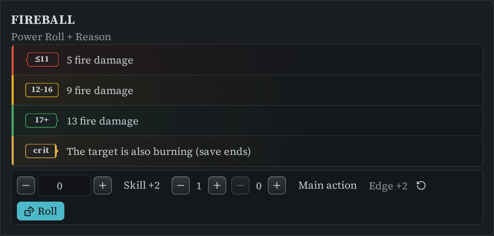
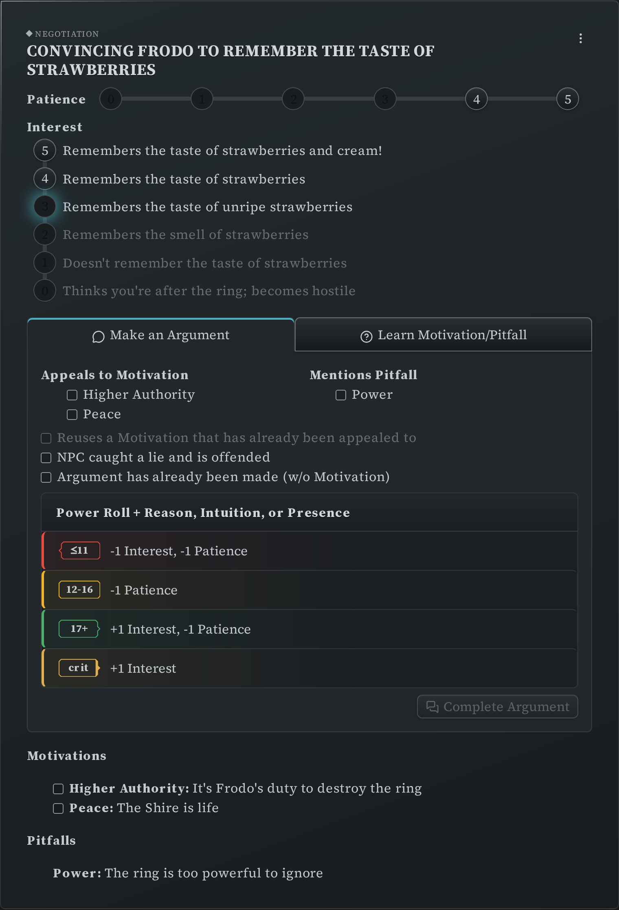
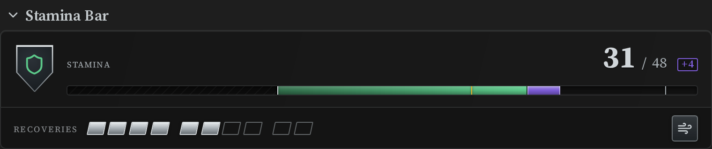

Draw Steel Elements Plugin for Obsidian¶
Statblocks, ability cards, initiative and negotiation trackers, hero trackers and a synced copy of the Draw Steel Compendium — all inside your Obsidian vault.
The Draw Steel Elements Obsidian Plugin is an independent product published under the DRAW STEEL Creator License and is not affiliated with MCDM Productions, LLC. DRAW STEEL © 2024 MCDM Productions, LLC.
Reading mode only. The plugin renders in Obsidian's Reading view; blocks show as plain
code in Live Preview. Switch a note to Reading view (Ctrl/Cmd + E) to see your elements.

Start here¶
New to the plugin? Getting started takes you from installing it to running a fight, assuming no YAML or markdown knowledge.
Guides¶
- Getting started — install, sync, your first element, your first fight
- Run an encounter — build it, then run it
- Track your hero — Stamina, heroic resource, surges and conditions, one tracker at a time
- Customize a monster — the homebrew loop
- Style your statblocks — presets and the display settings
- Advanced usage — per-block overrides, the sidebar, canvas, print, rolling
Reference¶
- Writing and editing blocks — type
/ds, pick an element, and the plugin writes the block for you. Also: the insert commands, the edit button, and pinning a tracker to the sidebar. - Compendium Sync — download the official Draw Steel Compendium into your vault and reference any entry by its code.
- Settings — what every settings page does, and the statblock presets.
- Migrating from 5.x to 7.0.0 — read this before your first sync if you have used the plugin before.
Requires Obsidian 1.13.0 or newer.
Elements¶
Everything below is a fenced code block whose language is one of the listed names. Each element accepts YAML inside the block; the extra names are shorter aliases for the same element.
Content you write or reference¶
Statblock — ds-statblock, ds-sb
A full creature statblock: characteristics, stats, traits, abilities and villain actions. The body can be your own YAML, or a reference to a compendium creature.

Feature / ability card — ds-feature, ds-ft, ds-feat
One ability, trait, test or custom power roll, rendered as a card with its power-roll tiers.

Featureblock — ds-featureblock, ds-fb
A group of features shown together — Malice features, Dynamic Terrain, and similar.

Compendium reference — ds-scc
Renders any entry from your synced compendium. The body is the entry's SCC code and nothing else, so the card always reflects the currently synced version.
Roll — ds-roll, ds-r, ds-power-roll
A standalone dice roller: power rolls with tiers, tests, opposed rolls and flat dice.

Horizontal rule — ds-hr, ds-horizontal-rule
A section divider styled like the ones in the book.
Running the game¶
Initiative tracker — ds-initiative, ds-it, ds-init
Run an encounter: heroes and enemy groups, turn order, Stamina, conditions, minion pools, the Malice pool with its log, and a per-actor action checklist.

Negotiation tracker — ds-negotiation, ds-nt
Run a negotiation: interest and patience, motivations and pitfalls, and the argument power roll.

Encounter builder — ds-encounter
List monsters by compendium code and see the encounter's EV, your party's budget, the resulting difficulty and the Victory payout — then hand the roster off to a new initiative tracker block.
Montage Test tracker — ds-montage
Successes, failures, rounds and who used which skill during a montage test.
Project / downtime tracker — ds-project
A downtime project's goal, its prerequisites, and every respite roll that went into it.
Party tracker — ds-party
The whole party in one table: level, victories, XP, renown, wealth and the shared hero token pool.
Hero trackers¶
Stamina bar — ds-stamina-bar, ds-stamina, ds-stam
Current, maximum and temporary Stamina, with an optional Recoveries row, a Catch Breath button, and the Winded and Dying states.

Conditions — ds-conditions, ds-cond
A conditions strip for a single hero or creature, with the same Conditions manager the initiative tracker uses.
Heroic resource — ds-resource
A counter for Ferocity, Focus, Piety, Essence and the rest — name the class and the block labels itself.
Surges — ds-surges
A surge counter, with the damage a surge adds shown alongside it.
Hero tokens — ds-tokens
The party's shared hero token pool, in one canonical block.
Character sheet pieces¶
Various elements are provided to support building character sheets in Canvas. Canvas cards are read-only — good for a sheet you look at, not one you click:
- Characteristics —
ds-characteristics,ds-char - Skills —
ds-skills - Values row —
ds-values-row,ds-vr - Counter —
ds-counter,ds-ct

Compendium Sync¶
Compendium Sync manages a local, up-to-date copy of the Draw Steel Compendium in your Obsidian Vault.
Once it's synced, a ds-scc block
renders any entry in it — the body is just the entry's SCC code.
Upgrading from before 7.0.0? The compendium tree was reorganised, and the plugin can move your existing copy to the new paths so Obsidian keeps your links working — see Migrating from 5.x to 7.0.0 and the migration map's review report.
Shared behaviour¶
- The element menu, and collapsing a block — the hover menu every element carries, and the three fields that control folding.
- Settings — appearance, fonts, statblock layout presets, rolling, and the
per-block
prefs:override for advanced users.